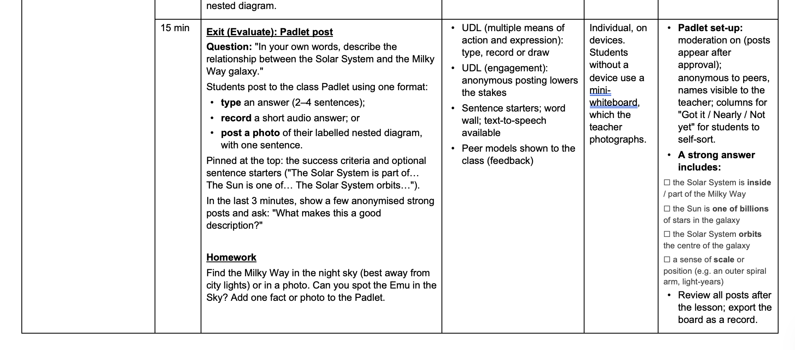
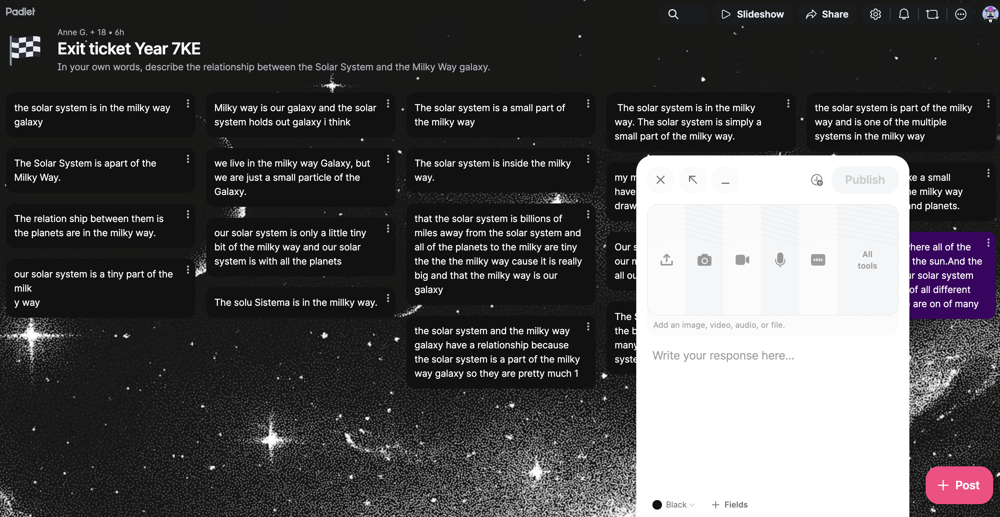

My initial summative assessment
Download SummativePrompt: Please redesign the following summative task for accessibility.
Download AI ResponseThis task was already designed having UDL in mind, remembering my prompts from Week 11, which is why I skipped 1. - Redesign the task with a UDL approach.
Prompt: Would you change anything for a student with ADHD in particular?
Download ScriptCase Study Jayden Morris (fictional)
Download Case StudyPrompt: Redesign the assessment task for Jayden.
Download AI ResponseThe AI responses have indeed made me think differently about assessment tasks. I now realise that most assessments at work are far from inclusive. Ideally, every student has different interests and thus needs the opportunity for different means of engagement, as well as different means of representation and action & expression. This can be easier with clearer writing and word choices in the task description, or by offering different ways to show their knowledge. Interestingly, students with ADHD might not benefit from a lot of choice, because they struggle with task initiation. For all students, some form of choice should be provided to make assessment inclusive. While it would be impossible to design an entirely new assessment task for every student in the classroom, students with additional needs should at least be supported. AI makes this less time-consuming than before. It is crucial to note that the human teacher and their expertise are irreplaceable and should always adjust strategies after AI generation (Jadsada et al., 2026).

Download Full Lesson PlanI chose a Padlet Post as an exit ticket because it lets every student answer in a format of their choice (Figure 1), making it an inclusive form of formative assessment. I can see the whole class’s understanding on the screen before moving on to the next lesson. Aligned with UDL principles, a Padlet post can be typed, recorded as audio or video, drawn, or uploaded as a photo, providing multiple means of expression (CAST, 2024).
Everyone has the same question; however, the format no longer decides who can show what they have learned. I can also make the posts anonymous. I can then turn it back to students' names later, creating a low-stakes environment where students don't have to be self-conscious about their responses. A Padlet post works well as an exit ticket mainly because it lets every student answer in a format that suits them, and you see the whole class’s understanding on one screen before the next lesson.
